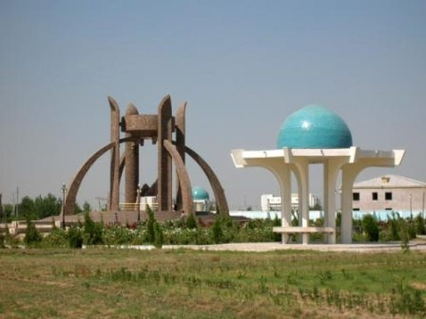
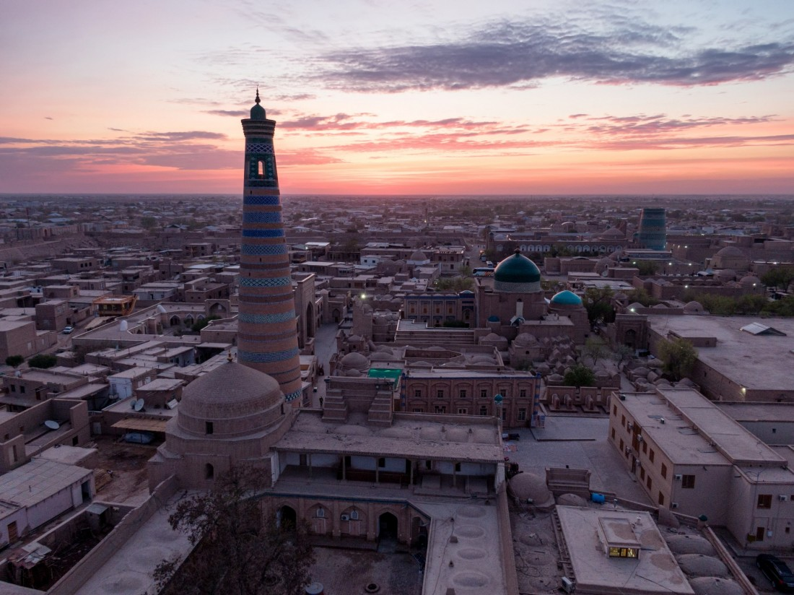

Xorazm viloyati — Oʻzbekiston Respublikasi tarkibidagi viloyat. 1925-yil fevraldan 1938-yil yanvargacha Xorazm okrugi, 1938-yil 15-yanvarda viloyat maqomiga oʻtkazilgan. Umumiy maydoni — 6,05 ming kvadrat kilometr.
Xorazm soʻzi birinchi marta zardushtiylarning muqaddas kitobi „Avesto“da tilga olingan. Qadimgi xorazm tilidan tarjima qilingan Xorazm „pastlikdagi yer“, „oziq-ovqatli yer“ degan maʼnoni bildirgan degan fikrlar ham bor.
Miloddan avvalgi 8-asrda xorazmliklar tomonidan asos solingan Markaziy Osiyodagi eng qadimiy davlatlardan biri tashkil topdi. Bu yerda massagetlar, saklar, apasaklar, oslar, daxlar va boshqalar qabilalari ham yashagan. 12-asrda Oʻrta Osiyoda qudratli Xorazmshohlar davlati tashkil topdi. U oʻzining eng gullab-yashnagan choʻqqisiga 13-asr boshlarida Alauddin Muhammad II davrida erishgan. Ammo imperiyaning gullagan davri uzoq davom etmadi va u moʻgʻullar bosqinidan natijasida Xorazmshohlar davlati quladi.
 